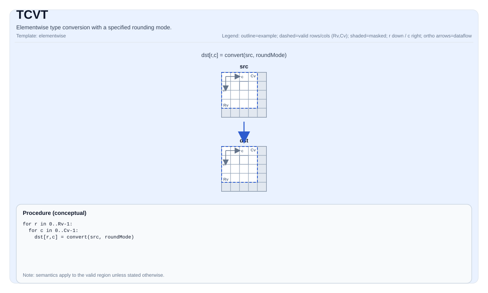

TCVT¶
指令示意图¶

简介¶
带指定舍入模式的逐元素类型转换。
数学语义¶
对每个元素 (i, j) 在有效区域内：
\[ \mathrm{dst}_{i,j} = \mathrm{cast}_{\mathrm{rmode}}\!\left(\mathrm{src}_{i,j}\right) \]
其中 rmode 是舍入策略（参见 pto::RoundMode）。
汇编语法¶
同步形式：
%dst = tcvt %src {rmode = #pto.round_mode<CAST_RINT>} : !pto.tile<...> -> !pto.tile<...>AS Level 1（SSA）¶
%dst = pto.tcvt %src{rmode = #pto<round_mode xx>}: !pto.tile<...> -> !pto.tile<...>AS Level 2（DPS）¶
pto.tcvt ins(%src{rmode = #pto<round_mode xx>}: !pto.tile_buf<...>) outs(%dst : !pto.tile_buf<...>)C++内建接口¶
声明于 include/pto/common/pto_instr.hpp 和 include/pto/common/constants.hpp：
公共包含头为
<pto/pto-inst.hpp>，内部声明位于pto/common/pto_instr.hpp。
template <typename TileDataD, typename TileDataS, typename... WaitEvents>
PTO_INST RecordEvent TCVT(TileDataD &dst, TileDataS &src, RoundMode mode, SaturationMode satMode, WaitEvents &... events);
template <typename TileDataD, typename TileDataS, typename... WaitEvents>
PTO_INST RecordEvent TCVT(TileDataD &dst, TileDataS &src, RoundMode mode, WaitEvents &... events);
template <typename TileDataD, typename TileDataS, typename TmpTileData, typename... WaitEvents>
PTO_INST RecordEvent TCVT(TileDataD &dst, TileDataS &src, TmpTileData &tmp, RoundMode mode,
SaturationMode satMode, WaitEvents &... events);
template <typename TileDataD, typename TileDataS, typename TmpTileData, typename... WaitEvents>
PTO_INST RecordEvent TCVT(TileDataD &dst, TileDataS &src, TmpTileData &tmp, RoundMode mode,
WaitEvents &... events);约束¶
dst和src必须在形状/有效区域方面兼容，如实现所要求的。- 对于给定的
RoundMode，转换(src 元素类型) -> (dst 元素类型)必须被目标支持。 - 实现说明 (Atlas A2/A3 训练系列产品/Atlas A2/A3 推理系列产品/Ascend 950PR/Ascend 950DT):
- 一种形式接受显式的
SaturationMode，指定的饱和行为会直接传递给实现。 - 另一种形式不显式给出
SaturationMode；此时实现会针对具体类型对选择目标定义的默认饱和行为。 - 在CPU实现中，目前仅实现了不显式传入
SaturationMode的形式。
- 一种形式接受显式的
- 临时Tile:
- C++ API提供显式传入
tmpTile的重载。在Atlas A2/A3 训练系列产品/Atlas A2/A3 推理系列产品上，当SaturationMode::OFF用于float -> int16、half -> int16或half -> int8时，PyTorch兼容的非饱和窄化路径会使用该临时Tile。其他转换不需要tmp空间。 - 实现会将
tmp转换为int32_t *使用；因此应按字节数来规划tmp Tile大小，而不是按TmpTileData::DType的类型理解。 - 下列公式给出按实现使用的32字节向量块粒度向上取整后的最小分配大小。若
C = 0，不会发起需要tmp的转换，所需tmp大小为0。 - 公共参数:
R = dst.GetValidRow()。C = dst.GetValidCol()。SS = TileDataS::RowStride，单位为源元素个数。REPEAT_MAX = 255，REPEAT_BYTE = 256，BLOCK_BYTE_SIZE = 32。
float -> int16，非饱和 （SaturationMode::OFF）:- 临时结果是第一步
float -> int32转换产生的int32_tTile。 - 由于
float源行受Tile约束保证32字节对齐，SS / 8是以32字节块为单位的源repeat stride。 - 对齐的主区域中，一次调用处理一行，最多处理
REPEAT_MAX个repeat，每个repeat为64个元素： $$ \text{tmpHeadBytes} = 4 \times 64 \times \min\left(\left\lfloor\frac{C}{64}\right\rfloor, 255\right) $$ - 尾部区域中，一次调用最多处理
REPEAT_MAX行，并使用源行stride。由于向量repeat stride以块为单位，空间范围按32字节块计算： $$ \text{tmpTailBytes} = \begin{cases} 32 \times \left((\min(R, 255) - 1) \times \frac{SS}{8} + \left\lceil\frac{C \bmod 64}{8}\right\rceil\right), & C \bmod 64 > 0 \ 0, & C \bmod 64 = 0 \end{cases} $$ - 该路径所需的最小tmp大小为： $$ \text{tmpFloatToInt16Bytes} = \max(\text{tmpHeadBytes}, \text{tmpTailBytes}) $$
- 对主区域而言，一个紧凑的完整repeat上界是
REPEAT_MAX * REPEAT_BYTE = 65280字节；但当SS较大时，尾部会按源行stride写入，所需空间可能更大。
- 临时结果是第一步
half -> int16，非饱和 （SaturationMode::OFF）:- 实现按行处理，每行拆分为不超过
64个元素的子块，并在每个子块之间复用同一段临时缓冲区。对于C > 0，令： $$ H = \min(C, 64) $$ - 该路径所需的最小tmp大小为： $$ \text{tmpHalfToInt16Bytes} = 32 \times \left\lceil\frac{H}{8}\right\rceil $$
- 对任意非空Tile，该路径的形状无关上界为
256字节。
- 实现按行处理，每行拆分为不超过
half -> int8，非饱和 （SaturationMode::OFF）:- 实现同样按不超过
64个元素的子块处理，并复用同一段256字节临时区域。第一步最多将64个int32_t写入字节[0, 255]；完成int32 -> int16窄化后，字节[0, 127]保存int16_t值，字节[128, 255]被复用为scratch。 tempMaskBuf = tempAndBuf + 64会前进64 * sizeof(int16_t) = 128字节，因此它指向同一256字节临时区域的上半部分，不需要额外再分配256字节。- 该路径所需的最小tmp大小为： $$ \text{tmpHalfToInt8Bytes} = \max\left(32 \times \left\lceil\frac{H}{8}\right\rceil,\ 128 + 32 \times \left\lceil\frac{H}{16}\right\rceil\right) $$
- 对任意非空Tile，该路径的形状无关上界为
256字节。
- 实现同样按不超过
- 覆盖所有tmp-backed TCVT转换的总体最小值:
- 由于
tmpHalfToInt8Bytes >= tmpHalfToInt16Bytes，对于同一形状，能覆盖所有会使用tmp的TCVT转换路径的最小tmp大小为： $$ \text{tmpSizeAllBytes} = \max(\text{tmpFloatToInt16Bytes},\ \text{tmpHalfToInt8Bytes}) $$ - 如果Tile非空，并且half路径使用形状无关的紧凑上界即可，也可写为： $$ \text{tmpSizeAllBytes} = \max(\text{tmpFloatToInt16Bytes},\ 256) $$
- 由于
- 对于不需要PyTorch兼容tmp-backed路径的转换，或者原生饱和行为已经满足需求时，可以继续使用不带
tmp的重载。
支持的转换（Atlas A2/A3 训练系列产品/Atlas A2/A3 推理系列产品与Ascend 950PR/Ascend 950DT并排对比）¶
| 源类型 | Atlas A2/A3 训练系列产品/Atlas A2/A3 推理系列产品目标类型 | Ascend 950PR/Ascend 950DT目标类型 | 差异 |
|---|---|---|---|
| FP32 | FP16, FP32（仅舍入）, BF16, I16, I32, I64 | FP32, FP16, BF16, I16, I32, I64, FP8_E4M3, FP8_E5M2, H8 | Ascend 950PR/Ascend 950DT新增FP8/H8目标 |
| FP16 | FP32, I32, I16, I8, U8, S4（int4b_t） | FP32, I32, I16, I8, U8, H8 | Atlas A2/A3 训练系列产品/Atlas A2/A3 推理系列产品有S4；Ascend 950PR/Ascend 950DT有H8 |
| BF16 | FP32, I32 | FP32, I32, FP16, FP4_E1M2X2, FP4_E2M1X2 | Ascend 950PR/Ascend 950DT新增FP16/FP4目标 |
| I16 | FP16, FP32 | U8, FP16, FP32, U32, I32 | Ascend 950PR/Ascend 950DT新增U8/U32/I32 |
| I32 | FP32, I16, I64, FP16（deq路径） | FP32, I16, U16, I64, U8 | Atlas A2/A3 训练系列产品/Atlas A2/A3 推理系列产品支持I32 -> FP16（half，deq）；Ascend 950PR/Ascend 950DT不支持 |
| I64 | FP32, I32 | FP32, I32 | 相同 |
| U8 | FP16 | FP16, U16 | Ascend 950PR/Ascend 950DT新增U16 |
| I8 | FP16 | FP16, I16, I32 | Ascend 950PR/Ascend 950DT新增I16/I32 |
| S4（int4b_t） | FP16 | N/A | Atlas A2/A3 训练系列产品/Atlas A2/A3 推理系列产品独有 |
| U32 | N/A | U8, U16, I16 | Ascend 950PR/Ascend 950DT独有源类型 |
| FP8_E4M3 | N/A | FP32 | Ascend 950PR/Ascend 950DT独有源类型 |
| FP8_E5M2 | N/A | FP32 | Ascend 950PR/Ascend 950DT独有源类型 |
| H8 | N/A | FP32 | Ascend 950PR/Ascend 950DT独有源类型 |
| FP4_E1M2X2 | N/A | BF16 | Ascend 950PR/Ascend 950DT独有源类型 |
| FP4_E2M1X2 | N/A | BF16 | Ascend 950PR/Ascend 950DT独有源类型 |
说明：
- 关键差异：Atlas A2/A3 训练系列产品/Atlas A2/A3 推理系列产品支持I32 -> FP16（half，deq路径），Ascend 950PR/Ascend 950DT不支持I32 -> FP16。
- Ascend 950PR/Ascend 950DT上不支持FP16 -> FP8_E4M3和FP16 -> FP8_E5M2。
示例¶
自动（Auto）¶
#include <pto/pto-inst.hpp>
using namespace pto;
void example_auto() {
using SrcT = Tile<TileType::Vec, float, 16, 16>;
using DstT = Tile<TileType::Vec, half, 16, 16>;
SrcT src;
DstT dst;
TCVT(dst, src, RoundMode::CAST_RINT);
}手动（Manual）¶
#include <pto/pto-inst.hpp>
using namespace pto;
void example_manual() {
using SrcT = Tile<TileType::Vec, float, 16, 16>;
using DstT = Tile<TileType::Vec, half, 16, 16>;
SrcT src;
DstT dst;
TASSIGN(src, 0x1000);
TASSIGN(dst, 0x2000);
TCVT(dst, src, RoundMode::CAST_RINT);
}汇编示例（ASM）¶
自动模式¶
# 自动模式：由编译器/运行时负责资源放置与调度。
%dst = pto.tcvt %src{rmode = #pto<round_mode xx>}: !pto.tile<...> -> !pto.tile<...>手动模式¶
# 手动模式：先显式绑定资源，再发射指令。
# 可选（当该指令包含 tile 操作数时）：
# pto.tassign %arg0, @tile(0x1000)
# pto.tassign %arg1, @tile(0x2000)
%dst = pto.tcvt %src{rmode = #pto<round_mode xx>}: !pto.tile<...> -> !pto.tile<...>PTO汇编形式¶
%dst = tcvt %src {rmode = #pto.round_mode<CAST_RINT>} : !pto.tile<...> -> !pto.tile<...>
# AS Level 2 (DPS)
pto.tcvt ins(%src{rmode = #pto<round_mode xx>}: !pto.tile_buf<...>) outs(%dst : !pto.tile_buf<...>)